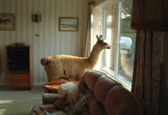

Once upon a time, there was a travelling llama. His name was Cuzco. He was a very rich llama, and ruled over all of the people in a small village in Equador. He loved munching on coffee beans and yelling at the peasants in his village. One day, an evil porcupine named Eezma came to the village to strike fear into the peasant's hearts. Cuzco was faced with a dilemma. He had to either protect his peasants, or he could let them face the wrath of Eezma.
Since he didn't care much about the peasants, but he cared very much about himself, the llama was then forced to protect his empire. Eezma took control of the village and had almost taken over completely as an empress. Cuzco was locked up and forced to only look at his peasants through his embellished window, as there were no mirrors in the room he was locked in. He didn't know what to do at this point, and wanted to develop a plan.
Hello world! This is HTML5 Boilerplate.